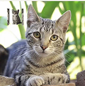
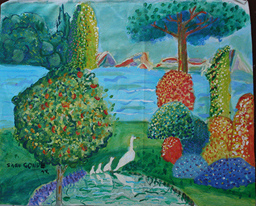
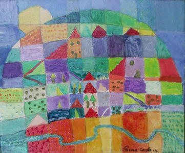

Sara Angelina Conde Mendoza
En Tenerife, Islas Canarias, España / En Galipán, edo. Miranda, Venezuela
Con mamá Elisa y papá Rami
Con abuelo Emilio en La Perla
En Viña del Mar, Chile, con Nico y Helena, 2017-18
VIDEOS
Espirales, 2010
Video de Carlos Eduardo Bertorelli con el audio de la pieza grabada en el CD NATURA, con tomas en los estudios de ArteVisión-USB, Caracas, entre otros escenarios, con Sari Angélica Conde Mendoza en el rol principal, 04-07-2010.

SARI DANZA - CANCIÓN DE CUNA - Sara Angelina Conde Mendoza, danza, Emilio Mendoza, guitarra, con la presencia de Belengo Barrios y su bisabuela Graciela Benatuil de Olmos, en la Quinta Los Olmos, El Toronjil, San Antonio de los Altos, el 20-05-2015, según la coreografía a dúo de las dos bailarinas de Coreoarte, Nathalia Molina y Nayibe Berroterán.
https://youtu.be/qehjINh_8b4
POEMAS
Mi Chi

Cuando me preocupada era de ti
porque me hacías muy feliz,
tu trazos de carboncillo y cenizas hacían dibujar en mi una sonrisa,
eras traviesa y cariñosa y por eso me hacías sentir fabulosa
cuando me maullabas y chillabas te entendía aún sin palabras.
Que lata mi gata, ya no te veremos más en la casa mi cosita bonita,
ahora estás arriba con todas las viejitas.
Las Voces de la Música
(Viña del Mar, 16 de mayo, 2018, de Sara junto a su amiga Ivania)
Cuando toco el piano,
siento que te extraño
y mis sentimientos
van aumentando.
Cuando toco el tambor,
tengo mucho temor
porque los sentimientos
de la música están en mi corazón.
Cuando toco la guitarra,
me siento muy enamorada
y mi corazón
se enciende a patadas.
Mis instrumentos me hablan,
me dicen que me extrañan.
Siempre Juntos
(Viña del Mar, 18 de mayo, 2017)
Siempre juntos
al camino de las nubes,
del amor,
para encontrar una conexión,
para el mundo
de las maravillas del Sol.
Marte tiene agua
(Gertenbach, 7 de junio, 2016)
La lluvia,
que tanto nos cae,
es una agüita de otro mundo
que viene de Marte.
El sol y las estrellas
caminan en el cielo
todos juntos,
son amigos.
En Silencio
(La Perla, 20 de mayo, 2015, con el Abuelo)
Oigamos el silencio
en la voz interna
y en los ecos del pensamiento.
En el canto de los seres,
en el agua y en el viento
como todo en movimiento.
Oigamos el silencio
en la calma que siento
al entregarme, confiado,
a la noche larga,
al largo descanso
del cual despierto,
eternamente,
en silencio.
Poema sonoro
(La Perla, 7 de diciembre, 2014)
lun mar mie jue vie carita triste chocolate passion abuelu entendiste
ya se que no orion dormilon laaas ventanaaaas arbolitos navidad fuego y viento
tilin emiliana elisa benchis trigo muñeca orion que dijo melcocha
Instrucciones:
Poner el texto en "Google translate" y cambiarle la persona que lo habla con su respectivo acento en otra lengua y al mismo tiempo como un delay.
Para Mi Mami hermosa
(sin fecha)
Una bicicleta, rueda
por las nubes
ve una luz brillante
y hermosa para ver a Dios,
una bicicleta que pueda ver las nubes
y la tierra, si está verde, azul y blanca
PINTURAS
Estas pinturas fueron realizadas bajo la tutoría del artista Hernán Soto, en San Antonio de los Altos.

2014 2014

2015
AMIGOS
Gertenbach, Alemania, mayo, 2017
Despedida en la Kesperschule, Gertenbach, Alemania, mayo, 2017
Sari con nuestra perra Mocca en La Perla, 2015
©2018
Copyright by Sara Angelina Conde Mendoza
All Rights Reserved
All Rights Reserved